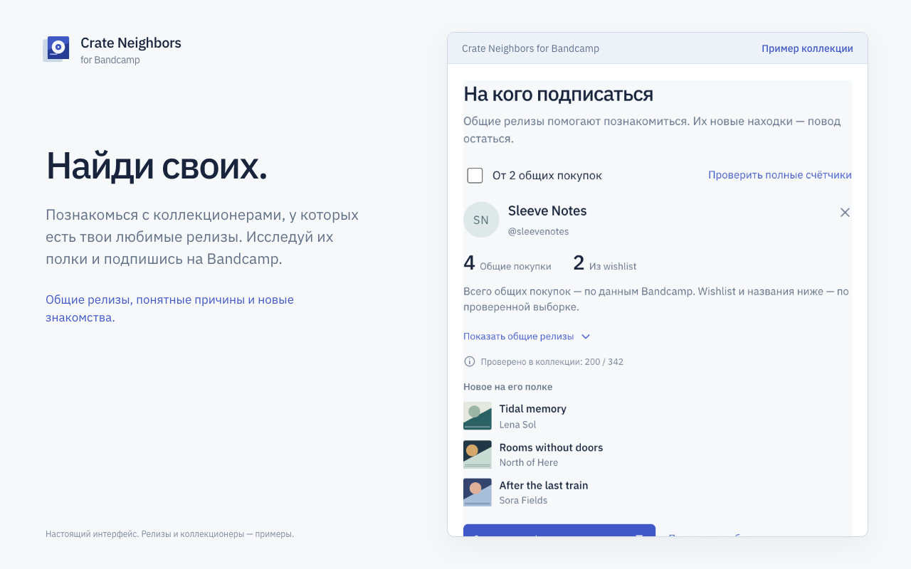
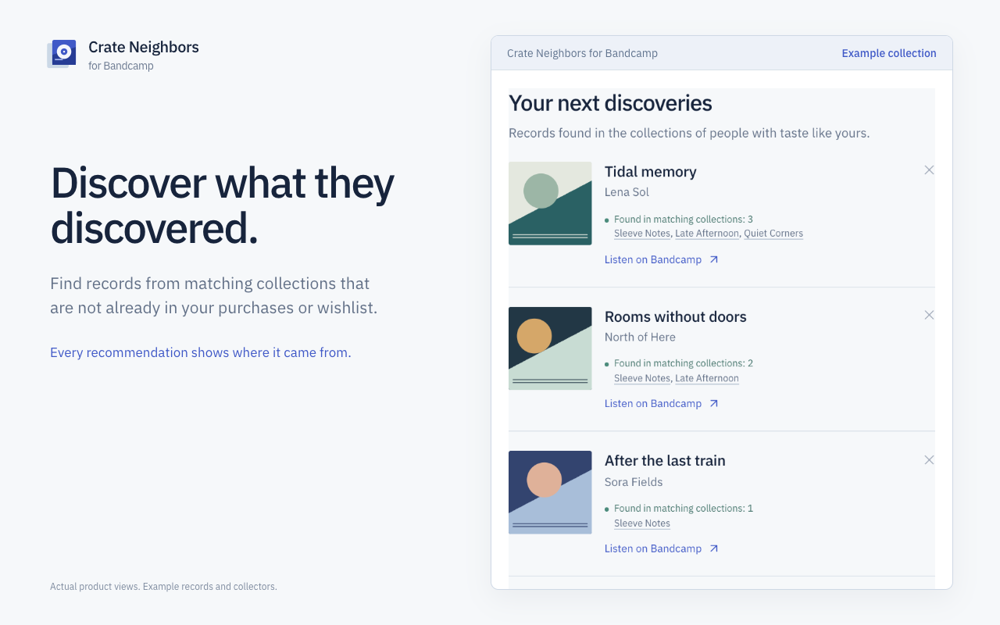

Найдите, на кого подписаться
Посмотрите общие покупки и совпадения с wishlist. Проверьте причины совпадения, включите фильтр «От 2 общих покупок» и откройте профиль человека.
Бесплатное расширение Chrome для поиска музыки
Сравните покупки и wishlist с коллекциями других людей. Найдите, на кого подписаться, и посмотрите, какую музыку они открыли раньше вас.
Бесплатно, с обработкой в браузере. Chrome 120+.
Текущий выпуск устанавливается из GitHub как распакованное расширение. Карточка Chrome Web Store пока недоступна.

Начните со своей коллекции
Любимые записи ведут к их коллекционерам. Их коллекции — к новым находкам.
Посмотрите общие покупки и совпадения с wishlist. Проверьте причины совпадения, включите фильтр «От 2 общих покупок» и откройте профиль человека.
Исследуйте записи из подходящих коллекций. Повторы, ваши покупки и wishlist исключаются из новых находок.
Ставьте очередь на паузу и возвращайтесь позже. Проверяйте глубже, скрывайте неподходящее и сохраняйте прогресс между запусками браузера.
От записи — к коллекции
Расширение работает в боковой панели Chrome рядом с Bandcamp. Слушать, покупать и подписываться вы будете на исходных страницах.
Загрузите покупки, wishlist и список коллекционеров, на которых уже подписаны.
Используйте предложенные, выберите свои или добавьте альбом из открытой вкладки.
Проверяйте покупателей этих релизов и открывайте находки по мере появления.

Понимайте, что стоит за числами
Полный счётчик покупок используется, когда он подтверждён для текущего аккаунта Bandcamp. Названия общих релизов и совпадения с wishlist относятся к проверенной выборке.
Если полный счётчик недоступен, ≥ 1 означает «найдено как минимум одно совпадение». Охват проверки указан в панели.
Поиск начинается с покупателей выбранных релизов и не охватывает сразу все аккаунты платформы.
Работу выполняет ваш браузер
Без собственного сервера, аналитики, подписки и отдельной регистрации. Запросы идут к Bandcamp, обложки загружаются с его CDN.
Коллекции, результаты и очередь хранятся локально. Может использоваться текущая сессия браузера; пароль не запрашивается.
Прочитать политику приватностиДа. Подписки, лицензионных ключей и платных суточных ограничений нет. Темп запросов учитывает ограничения сервера.
Скачайте ZIP из GitHub Releases, распакуйте его, откройте chrome://extensions, включите режим разработчика и нажмите «Загрузить распакованное расширение». Выберите папку с manifest.json и оставьте её на месте.
Версия 0.1.1 поддерживает bandcamp.com и поддомены. Магазины на отдельных доменах пока не поддерживаются. Закрытые, удалённые или недоступные данные могут пропускаться.
Посмотрите причину в панели. Дождитесь окончания паузы сервера или откройте музыкальную платформу для проверки браузера, затем продолжите поиск. Прогресс сохранён.
В разделе поддержки или GitHub Issues. Можно писать по-русски или по-английски.
Crate Neighbors for Bandcamp · Chrome 120+ · Русский и английский.